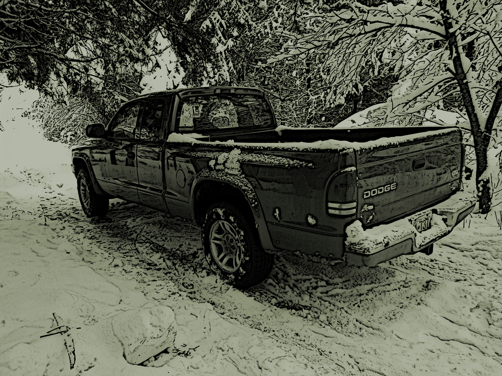
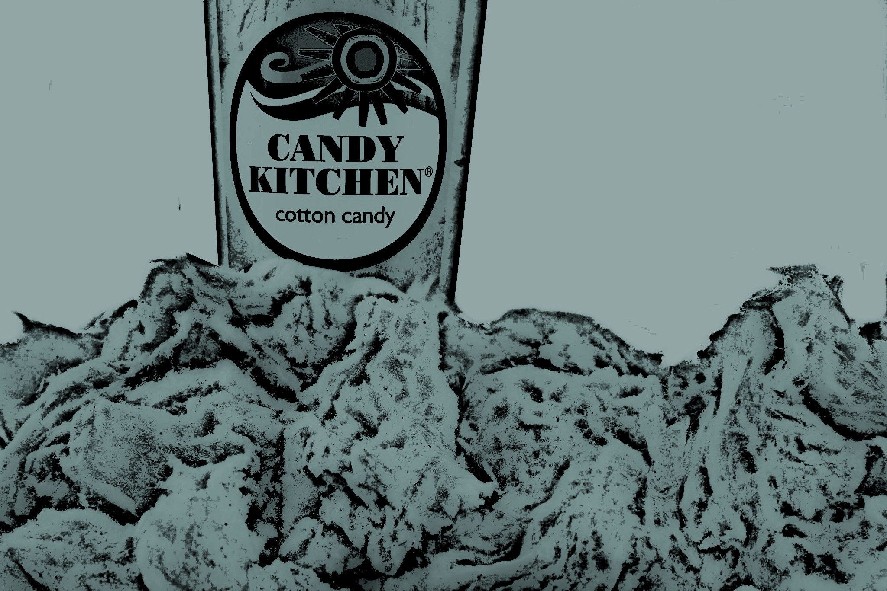
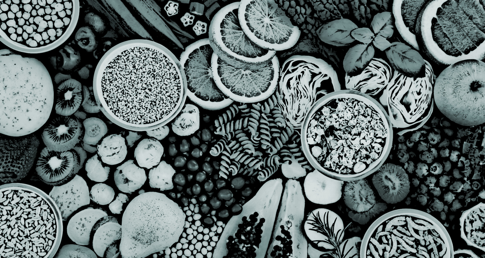
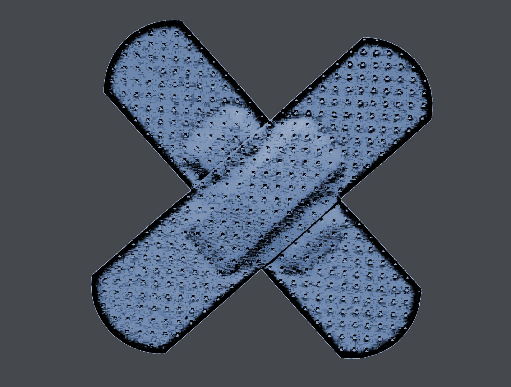

Get to know Banjo
A sample of loves, likes, and dislikes
Lucy - My first car. Bit pranged, but she is my happy place
School - Feel like I am evolving
Emma - Not just the student, also the name of my electric guitar. My closest bond
Family - Similar to me
Murphy - My first teddy bear, sometimes I just need a cuddle

My pen - All the way from England, makes laborious writing assignments tolerable
My pencil - Sister to my pen, makes note taking exciting
Christmas - My favourite holiday
Computer Science - My favourite subject

Spiderman - Relatable, handsome, best superhero
Cheeko - Very fluffy

Gordon - First tree I ever planted, from my fourth grade teacher, represents life
Water - Just bought myself a new bikini
Computers - Magical
Music - Cannot do it, appreciate it
Aaron and Anne - My pair of skis, closest I've gotten to flying
Sunshine - Warmth is happiness
Rain - Makes sunshine more special
Alone time - Nice to recover
Group projects with someone cute - Bit of a cheeky exception
Saturdays - Beginning of recovery
Candy Floss - Bit freaky
Pencil lead snapping - Instant petrification and annoyance
Massive textbooks - I have probably developed scoliosis
Initiation - Capable introvert, approaching anyone freaks me out
Tomatoes - Cook 'em, mash 'em, put 'em in a stew, does not matter
Failing - Just a bit of a bummer
Being tired - Makes me feel wobbly
Being hungry - I get a bit angry
Paper cuts - Just the worst aren't they?
Homework - Just the worst isn't it?
Being sick - Seems pleasant missing school until you are back and you realize the day you missed was hyper-speed-lessons day
Dancing - Just wish I could